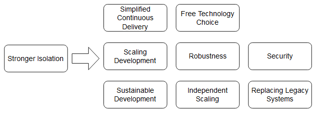

Microservice
Microservice¶
Microservices are independently deployable modules. In practice, microservices can vary hugely in size. New microservices can replace parts of the old system. A key feature of the microservices architecture is that a new version of the entire application is not deployed when a change is made to any one microservice. Thus, with the help of microservices, teams can act independently regarding domain logic and technology. This minimizes the coordination effort required for large projects. No pre-existing codebase has to be used. In addition, developers can employ a completely different technology stack.
Advantages of this microservice definition¶
The definition of microservices as independently deployable modules has several advantages:
- It is very compact.
- It is very general and covers all kinds of systems which are commonly denoted as microservices.
- The definition is based on modules and is thus a well-understood concept. This allows us to adopt many ideas concerning modularization. This definition also highlights that microservices are part of a larger system and cannot function entirely on their own. Microservices have to be integrated with other microservices.
- The independent deployment is a feature that creates numerous advantages and is therefore very important. Thus, the definition, in spite of its brevity, explains what the most essential feature of a microservice really is.
Sustainable development¶
Replaceability of microservices¶
To achieve replaceability, the dependencies between microservices have to be managed appropriately.
Good Qustion
Why is it NOT likely that a developer will introduce a new dependency between two modules in a microservice architecture?
Answer
Because microservices have clear boundaries due to their interface and to introduce a dependency, they will have to call it.
Dependencies have to be managed¶
Microservices have clear boundaries due to their interface irrespective of whether the interface is implemented as a REST interface or via messaging. When a developer introduces a new dependency on such an interface, they will notice this because the interface has to be called appropriately. For this reason, it is unlikely that architecture violations will occur at the level of dependencies between microservices. The interfaces between microservices are in a way architecture firewalls since they prevent architecture violations. The concept of architecture firewalls is also implemented by architecture management tools like Sonargraph, Structure101, or jQAssistant. Advanced module concepts can also, generate such a firewall. In the Java world, OSGi limits access and visibility between modules. Access can even be restricted to individual packages or classes.
The architecture at the level of dependencies between microservices also remains maintainable. Developers cannot unintentionally add dependencies between microservices. Therefore, microservices can ensure a high architecture quality in the long term both inside each microservice and between the microservices.
Continuous delivery¶
Continuous delivery is an approach where software is continuously brought into production with the help of a continuous delivery pipeline. The pipeline brings the software into production via different phases.
Phases¶
Typically, the software compilation, unit tests, and static code analysis are performed in the commit phase. In the acceptance test phase, automated tests assure the correctness of the software regarding domain logic. Capacity tests check the performance at the expected load. Explorative tests serve to perform not-yet-considered tests or to examine new functionalities. In this manner, explorative tests can analyze aspects that are not yet covered by automated tests. In the end, the software is brought into production.
Microservices represent independently deployable modules. Therefore each microservice has its own continuous delivery pipeline. Setting up an environment to integration test a microservices architecture can be complicated.
Microservices facilitate continuous delivery¶
The continuous delivery pipeline is significantly faster because the deployment units are smaller.
The tests are also faster because they need to cover fewer functionalities.
Building up a continuous delivery pipeline is easier for microservices. Setting up an environment for a deployment monolith is complicated.
The deployment of a microservice poses a smaller risk than the deployment of a deployment monolith.
Robustness¶
When a memory leak exists in a microservice, only this microservice is affected and crashes. The other microservices keep running. Of course, they have to compensate for the failure of the crashed microservice; this is called resilience.
Independent scaling¶
Most of the time, scaling the whole system is not required.
- Each microservice can be independently scaled.
- the microservices naturally have to fulfill certain requirements. For example, they must be stateless. Otherwise, requests of a specific client cannot be transferred to another instance, because this instance then would not have the state specific to that client.
- In the case of a microservice, the scaling can be more fine-grained so that normally fewer additional services are necessary and the basic requirements are less complex.
Security¶
For example, it is possible to introduce firewalls into the communication between microservices. Besides, the communication between microservices can be encrypted to guarantee that the communication really originates from another microservice and is authentic.
Isolation¶
- In the end, many advantages of microservices can be traced back to a stronger isolation.
- In isolation, a microservice can be replaced with a new microservice. This enables the low-risk replacement of microservices and allows one to keep the architecture of the individual microservices clean. Thus, isolation facilitates the long-term maintainability of the software.

Microservices involve trade-offs¶
For example, when robustness is the goal of introducing microservices, the microservices have to be implemented as separate Docker containers. Each Docker container can crash without affecting the other ones.
If robustness does not matter, other alternatives can be considered. For example, multiple microservices can run together as Java web applications in one Java application server. In this case, they all run in one process and therefore are not isolated in respect to robustness. Still they are independently deployable. - [x] A memory leak in any of the microservices will cause them all to fail. - [x] However, such a solution is easier to operate and therefore might be the better trade-off in the end.
Two levels of microservices: Domain and technical¶
The technical and organizational advantages point to two levels at which a system can be divided into microservices.
- A coarse-grained division by domain enables the teams to develop largely independently and allows them to roll out a new feature with the deployment of a single microservice if it concerns just this one domain, as it usually does. However, sometimes multiple domains are involved and more than one microservice must be deployed. For example, in an e-commerce system, customer registration and the order process can be examples of such coarse-grained microservices.
- For technical reasons some microservices can be further divided. These microservices can then be scaled independently of the other microservices. When, for example, the last step of the order process is under especially high load, this last step can be implemented in a separate microservice. The microservice belongs to the domain of the order process, but for technical reasons, it is implemented as a separate microservice. This is an example of a technical division.
The drawing above shows an example for the two levels. Based on the domains, an e-commerce application is divided into the microservices:
- Search
- Full-text search
- Category-based search
- Check out
- Payment
- Delivery
Search is further subdivided. The full-text search is separated from the category-based search.
Good Question:
Suppose you’re designing an application where one microservice gets data from another. If this data fetching fails, the functionality of the app will be compromised. What would be the best course of action in this situation?
As the microservices communicate over the network, which is unreliable. The app should not depend on this communication. So the solution would be merge the two microservices into one.